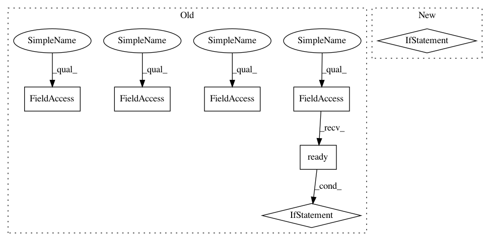

dbd113a4c1f3e01b5261169a7533a00c315df7f8,ilastik/applets/multicut/multicutGui.py,MulticutGuiMixin,setupLayers,#MulticutGuiMixin#,192
Before Change
op = self.__topLevelOperatorView
// Final segmentation -- Edges
if op.Output.ready():
default_pen = QPen(SegmentationEdgesLayer.DEFAULT_PEN)
default_pen.setColor(Qt.blue)
layer = SegmentationEdgesLayer( LazyflowSource(op.Output), default_pen )
layer.name = "Multicut Edges"
layer.visible = False // Off by default...
layer.opacity = 1.0
layers.append(layer)
del layer
// Superpixels -- Edge Probabilities
// We use the RAG"s superpixels, which may have different IDs
self.superpixel_edge_layer = None
if op.Superpixels.ready() and op.EdgeProbabilitiesDict.ready():
layer = SegmentationEdgesLayer( LazyflowSource(op.Superpixels) )
layer.name = "Superpixel Edge Probabilities"
layer.visible = True
layer.opacity = 1.0
self.superpixel_edge_layer = layer
self.update_probability_edges() // Initialize
layers.append(layer)
del layer
// Superpixels -- Edges
if op.Superpixels.ready():
default_pen = QPen(SegmentationEdgesLayer.DEFAULT_PEN)
default_pen.setColor(Qt.yellow)
layer = SegmentationEdgesLayer( LazyflowSource(op.Superpixels), default_pen )
layer.name = "Superpixel Edges"
layer.visible = False
layer.opacity = 1.0
layers.append(layer)
del layer
// Final segmentation -- Label Image
if op.Output.ready():
layer = self.createStandardLayerFromSlot( op.Output )
layer.name = "Multicut Segmentation"
layer.visible = False // Off by default...
layer.opacity = 0.5
layers.append(layer)
del layer
// Superpixels
if op.Superpixels.ready():
layer = self.createStandardLayerFromSlot( op.Superpixels )
layer.name = "Superpixels"
layer.visible = False
After Change
op = self.__topLevelOperatorView
mc_edge_layer = self.create_multicut_edge_layer()
if mc_edge_layer:
layers.append(mc_edge_layer)
// Superpixels -- Edge Probabilities
// We use the RAG"s superpixels, which may have different IDs
self.superpixel_edge_layer = None
if op.Superpixels.ready() and op.EdgeProbabilitiesDict.ready():
layer = SegmentationEdgesLayer( LazyflowSource(op.Superpixels) )
layer.name = "Superpixel Edge Probabilities"
In pattern: SUPERPATTERN
Frequency: 3
Non-data size: 7
Instances
Project Name: ilastik/ilastik
Commit Name: dbd113a4c1f3e01b5261169a7533a00c315df7f8
Time: 2016-08-01
Author: bergs@janelia.hhmi.org
File Name: ilastik/applets/multicut/multicutGui.py
Class Name: MulticutGuiMixin
Method Name: setupLayers
Project Name: ilastik/ilastik
Commit Name: 5b06a69d4bc2996ee662873dc53726a51e195f9f
Time: 2017-08-31
Author: carstenhaubold@googlemail.com
File Name: ilastik/applets/tracking/conservation/opConservationTracking.py
Class Name: OpConservationTracking
Method Name: propagateDirty
Project Name: ilastik/ilastik
Commit Name: 942f801745fed281803662c727e0025143a785ea
Time: 2013-09-18
Author: bergs@janelia.hhmi.org
File Name: lazyflow/operators/classifierOperators.py
Class Name: OpPredictRandomForest
Method Name: propagateDirty
Project Name: ilastik/ilastik
Commit Name: dbd113a4c1f3e01b5261169a7533a00c315df7f8
Time: 2016-08-01
Author: bergs@janelia.hhmi.org
File Name: ilastik/applets/multicut/multicutGui.py
Class Name: MulticutGuiMixin
Method Name: setupLayers